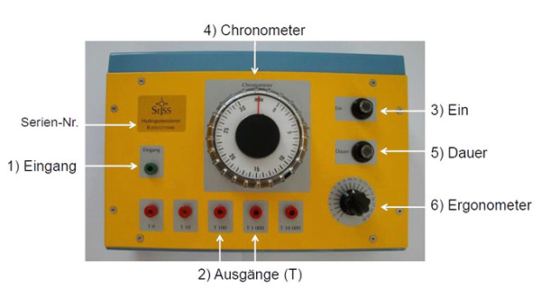
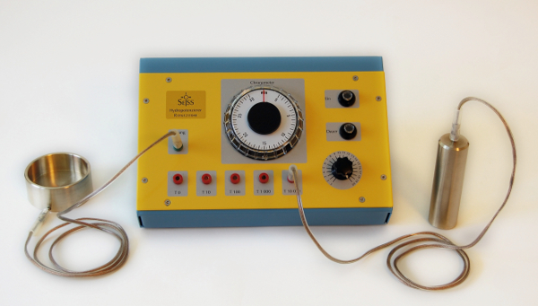

The English version of this site, see fhab.org The English version of this site, see fhab.org |
 |
|
SEISS – HYDRO-POTENZIERER
Gebrauchsanweisung-Hydropotenzierer (Download als PDF; 2.9Mbit)
Flyer-Hydropotenzierer (Download als PDF; 250kB)
Eine Erfindung von Willi Seiß in den 80-Jahren des vorigen Jahrhunderts. Unter Mithilfe von jungen, beherzten Ingenieuren konnten wir einige Erneuerungen anbringen und das Konzept optimieren.
Dieses Gerät ist jetzt in einem Gesamtpaket erhältlich, inklusive 21 Tinkturen, die sich für eine Anwendung mit dem Hydro-Potenzierer besonders eignen.

I. GERÄTEBESCHREIBUNG (Serien-Nr. R161211040)
Dieses Gerät steht in der Tradition der Homöopathie, der mit Samuel Hahnemann seinen Anfang nahm. Unendlich viele Kranken wurden durch diese Heilweise geheilt. Mit diesem Gerät ist der Schritt zu den Hochpotenzen getan, die sich in der üblichen Form der Verdünnungen kaum realisieren ließen. Hahnemann fing an mit den Potenzen rundum D10, er ging damals nicht weiter, denn die Zeit war dazu noch nicht reif. Sein Schüler Kern ergänzte diese mit den D100 Potenzen, aber hat alles mit dem älteren Hahnemann so besprochen. Und jetzt wurde der Schritt zum D1000 und höher durch Willi Seiß getan. Die Bedeutung dieser Zahlen ist den Hermetikern in weiterem Sinne vorbehalten, denn sie kennen die Wesensglieder der menschlichen Organisation, wie auch Dr. Rudolf Steiner diese gelehrt hat.
Der HYDRO-POTENZIERER weicht in Konzeption und Konstruktion ab von bekannten Prinzipien. Sein inneres Funktions-Element ist eine wässerige Zelle, die als Hydro-Transmissions-Zelle – „Übertragungs-Element“ – funktioniert. Dadurch arbeitet dieses Gerät ohne fremde Energiequelle (Batterie, Akku, Stromnetz) und wirkt nicht schädigend auf die feinstoffliche Organisation (das biologische System oder die ätherische Organisation eines Menschen, sowie dessen übergeordneten Wesensglieder). Dasselbe gilt für die anderen Naturreiche. Es wird nur hochqualitatives Zubehör verwendet. Verzinkte Drähte, eingefärbte Kabelisolationen, Aluminium-Schalen, verlötete Stecker oder verlötete Hand-Elektroden beeinträchtigen jede Therapie. Deshalb sind die verwendeten Becher-Elektroden aus Messing (Ecobrass) gedreht und alle Kabel aus Litzen mit farbloser Ummantelung und verschraubten Steckern.
- Eingang für Messing-Becher via Kupfer-Kabel kurz.
- Ausgänge für 5 versch. Potenzen (T 0 – T 10 – T 100 – T 1.000 - T 10.000)
- Ein für das Anschalten des Geräts (in Zusammenhang mit dem Chronometer)
- Chronometer: „Dreh-Uhr“ für Funktion „ein“ einstellbar 0 - 35 Min.
- Dauer für die Funktion auf „ein“ dauernd, d.h. ohne Chronometer.
- Ergonometer: Drehknopf (unten rechts) einstellen als Memo = Minuten zur Behandlung bei Funktion „Dauer“.
II. HANDHABUNG DES HYDRO-POTENZIERERS
Die Gebrauchsanweisung beschreibt Aufbau, Funktion und Bedienung des HYDRO-POTENZIERERS; sie ist nicht geeignet, Anfänger in die Funktions- und Wirkungsweise des HYDRO-POTENZIERER einzu-führen. Voraussetzung zum Verständnis des Wirkungsprinzips ist Kenntnis einer hermetischen Wissenschaft (z.B. christlich-rosenkreuzerisch, anthroposophisch, alchemistisch, homöopathisch, schamanisch).
Der Anwender trägt jegliche Verantwortung für die korrekte Handhabung des HYDRO-POTENZIERERS.
Die Lebensdauer der Übertragungs-Elemente im HYDRO-POTENZIERER beträgt bei sachgemäßer Lagerung und Behandlung mindestens 30 Jahre.
Lagerung und Betrieb bei Zimmer-Temperatur (ca. 4°C - 40°C) und mittlerer Luftfeuchtigkeit (relative Luftfeuchtigkeit 15% - 70%, nicht kondensierend); keine Sonnenbestrahlung.
Anwendung des HYDRO-POTENZIERERS im Umfeld starker elektromagnetischer Felder ist nicht zu empfehlen; der Raum kann davor hinreichend geschützt werden durch ein SEISS AUFBAU- UND ENTSTÖR-MODUL (RM III + TS oder RM IV + TS).
II. VERWENDUNG DES HYDRO-POTENZIERERS
Zubehör (zum Betrieb erforderliche Komponenten):
- 2 Kupfer-Kabel: 1 kurzes für Eingang und 1 langes für 5 Ausgänge.
- Hand-Kontakt (HK 1) mit Eingang für langes Kupfer-Kabel
- aus Messing (Ecobrass CW724R CuZn21Si3Pb)
- Kanten mit angedrehtem Radius
- poliert; ansprechendem Design; 550 g - Messing-Becher für Wirkstoffe zum Einspeisen
- aus Messing (Ecobrass CW724R CuZn21Si3Pb)
- Außen- & Innen-Kanten mit angedrehtem Radius
- poliert; reinigungs-freundlich; ansprechendes Design; 400 g
Verwendungszweck:
Der HYDRO-POTENZIERER dient zur Unterstützung und Verstärkung des Wohlbefindens, indem die reine Substanz von gesundheitsfördernden Wirkstoffen nutzbar gemacht und über den Messing-Becher, den Hydro-Potenzierer und den Hand-Kontakt auf das Lebensgefüge des Menschen übertragen wird.
Funktionsweise:
Diese basiert auf einem besonders reinen Wir-kungsprinzip, das ohne gewöhnliche elektrische Ladung und ohne Elektrizität auskommt. Diese Wirkung basiert auf den Kräften des gereinigten und belebten Wirkstoffes, der über 5 verschiedene Potenzen (T 0 - T 10 - T 100 - T 1000 - T 10000)
durch den Hydro-Potenzierer übertragen und wirksam gemacht wird.
Hinweis:
Anwendung mit dem Hand-Kontakt über die rechte Hand wirkt auf die physisch-ätherische Ebene - über die linke Hand auf die seelische Struktur des Menschen.

III. EINRICHTEN UND BETRIEB
Zubehör gemäß Bild oben mit HYDRO-POTENZIERER verbinden: An-wender wählt Anschluss der gewünschten Potenzierung (T 0 - T 10 - T 100 - T 1000 - T 10000).
Wirkstoff in Messing-Becher geben. Messing-Becher muss vorher mit Alkohol gereinigt werden. Falls gewählter Wirkstoff flüssig ist, diesen in einem Glasbehälter aus Klarglas, d.h. ohne Farbstoffe (z.B. Ampulle) in den Messing-Becher geben; Klebe-Etiketten und Klebespuren von Glasbehälter entfernen.
Dem Patienten den Hand-Kontakt in die Hand geben und Knopf „Ein“ drücken, Chronometer-Dreh-Uhr auf gewünschte Minuten-Zahl stellen; Chronometer tickt, gekoppelt mit Funktion „Ein“.
Präzise Bedienung beim Einstellen: Roten Zeiger wenig über beabsichtigte Min.-Zahl hinausdrehen + dann genau auf die einzustellende Min.-Zahl zurückdrehen.
Option: Falls jemand das Chronometer-Ticken nicht hören will: Ohne Chronometer „Dauer“ drücken. Der Knopf „Ein“ entfällt dann. Dann muss die Anzahl Minuten der Anwendung selber gemessen werden (z.B. Stopp-Uhr, Wecker). Das Ergonometer (Drehknopf unten rechts – ist keine Uhr) eventuell einstellen als Memo für die Anzahl Minuten der Behandlung bei Funktion „Dauer“. Die Funktion wird erst beim Ausschalten unterbrochen (Knopf „Dauer“ auf aus).
Nach Ablauf der Minuten für die Behandlung den Hand-Kontakt aus der Hand des Patienten entnehmen. Wirkstoff aus dem Messing-Becher entfernen. Knopf „Ein“ resp. „Dauer“ ausschalten.
Chronometer > Drehscheibe für Ruheposition in Ausgangslage drehen (in senkrechte Position nach oben).
Nach Gebrauch die 2 Kupfer-Kabel aus dem HYDRO-POTENZIERER, entfernen, damit keine Fremdeinflüsse einströmen, denn eine Verbindung ist ein wenig immer vorhanden, auch wenn für das menschliche Auge die Kabel-Verbindung effektiv unterbrochen ist.
IV. REINIGUNG UND DESINFEKTION NACH JEDEM GEBRAUCH
Hand-Kontakt und gegebenenfalls den Messing-Becher mit sauberem Tuch und einer handelsüblichen Alkohol-Lösung reinigen.
V. INSTANDHALTUNG UND WARTUNG
Der HYDRO-POTENZIERER ist während der Lebenszeit des Wirkele-mentes wartungsfrei. Bei Bedarf mit feuchtem Tuch mit unbedenklichem Spülmittel reinigen.
VI. SICHERHEITSHINWEIS ZUM HYDRO-POTENZIERER
Nie den HYDRO-POTENZIERER mit den 2 Kupfer-Kabeln mit Netz- oder Batterie-Strom verbinden: Kabel + Stecker sind dazu nicht geeignet, sie werden unbrauchbar. Auch die Hydro-Übertragungszelle wird dadurch unbrauchbar, sie wird durch Anschluss an elektrische Geräte geschädigt. Den Kontakt mit hochgeladenen Substanzen oder Geräten (Computer, Ladegeräte, Mikrowelle) vermeiden.
Den HYDRO-POTENZIERER schützen vor Sonne, Hitze (>40°C) und Kälte (<4°C), er wird sonst unbrauchbar; auch durch Röntgen-Bestrahlung (z.B. bei Sicherheits-Kontrollen).
VII. MASSE DES HYDRO-POTENZIERERS
L = 25 cm B = 16.5 cm H = 6 cm hinten und 4,3 cm vorne.
VIII. ENTSORGUNG
Lokale Entsorgungs-Vorschriften einhalten. Da der Hydro-Potenzierer keine elektrischen Teile enthält, genügt die Entsorgung mit dem Altmetall.
IX. WEITERE ANWEISUNGEN / ANLEITUNGEN
Die Behandlung mit dem HYDRO-POTENZIERER kann man jeden Tag ohne Schaden anwenden. Zum Beispiel lässt sich 6 Wochen lang jeden Tag Arnika D30 anwenden. Es ist dadurch die Korrektur einer Insuffizienz des physisch-ätherischen Herzens gegeben. Man kann den HYDRO-POTENZIERER am Tag wiederholt anwenden, es schadet nicht, kann einem aber psychisch leicht zu viel werden. Nebenwirkungen sind nicht bekannt.
Weitere Angaben zum Gebrauch des HYDRO-POTENZIERERS und den Substanzen findet man in der ausführlichen, zusätzlichen Bro-schüre.
Zur Verwendung sind u.a. geeignet:
- Die Heilpflanzen-Tinkturen zum Einsatz des HYDRO-POTENZIERERS. Zum Bedarf gibt es die hauseigenen Tinkturen des Achamoth Verlages – FHaB, welche mit dem HYDRO-POTENZIERER mitgeliefert werden.
- Globuli der Wala, Weleda, DHU usw. in jeglicher Potenzstufe
- Ampullen mit geeigneten Substanzen in jeglicher Potenzstufe
Zur Verwendung nicht geeignet sind u.a.:
- Tinkturen mit mehr als 15% Alkohol
- Chemische Substanzen jeglicher Art
- Substanzen in farbigem Glas oder mit Kunststoff, resp. Aluminium-Deckel
- Sogenannte „wesenlose“ Composita, d.h., nicht geistig veranlagte Zusammenstellungen
X. HINWEIS ZU DEN TINKTUREN
Die Tinkturen sind aus den edelsten Materialien und mit äußerster Sorgfalt hergestellt. Alle Inhalte sind biologisch rein, die Schadstoffe sind minimalst, weil die Pflanzenteile in den höheren Lage (600 bis 1500 Mm. über Meeresspiegel) geerntet wurden.
Die Zubereitungsweise erfolgt so, dass die Wirkstoffe der Pflanzen in ihrem Gefüge zu 100% erhalten bleiben. Dazu liegt die Bedingung unter andere darin, dass die Herstellung der Extrakte, der Urtinktur, in Kleinstmengen geschieht. Dies ist für die Industrie nicht realisierbar, aber effektiv Standard in einer Manufaktur, wie der FHaB in Taisersdorf.
Der Hintergrund dieser Herstellung, wie auch die beschriebenen Wirkungen der Heilpflanzen, sind die Frucht der geistigen Forschung, die in der FHaB seit 20 Jahren gepflegt wird. Die Tinkturen sind hoch wirksam und speziell zur Anwendung mit dem SEISS-HYDRO-POTENZIERER geeignet: Die Ampullen in fest verschlossener Fertigung sind leicht handhabbar, also praktisch im Gebrauch und trotz des geringen Anteils an Alkohol sehr lange haltbar. Diese lange Haltbarkeit wird erreicht durch einen Rhythmisierungsprozess, welche durch die Inversina, einen Taumelmischer, vollzogen wird.
Weitere Informationen finden Sie im Buch:
von Catharina Barker
151 Seiten
Verlag: Achamoth (3. Erweiterte Auflage 2020)
Sprache: Deutsch
ISBN-13: 978-3-923302-58-1
XI. BESTELLUNG / VERKAUFSPREIS nicht mehr Lieferbar »» neu erhhältich Reise-Hydropotenzierer
Der SEISS-Hydro-Potenzierer kann direkt via Achamoth-Verlag/FHaB bezogen werden. Wenden Sie sich dazu bitte direkt an Catharina Barker telefonisch, oder über das Kontaktformular.
Der Preis des SEISS-Hydro-Potenzierers beträgt:
- 895,00 € zzgl. 170,05 € MwSt. = 1.065,05 €
Im Lieferumfang sind enthalten:
- Hydro-Potenzierer
- Holzfutteral
- Messingschale (Ecobrass)
- Handkontakt (Ecobrass)
- Kabel kurz für die Schale
- Kabel lang für den Handkontakt
- Gebrauchsanweisung/ Broschüre
- 3 x 7 Tinkturen
- Beschreibung der Tinkturen
Die Broschüre klärt Sie über den Hintergrund dieses Geräts auf und beschreibt dessen Handhabung, außerdem enthält es Vorschläge für Anwendungen.
Als allgemein orientierende Literatur empfehlen wir zusätzlich (Achamoth Verlag):
- C. Barker (Hrsg.), „Die heilerischen Impulse von Willi Seiß und seiner Freien Hochschule am Bodensee“
- C. Barker, „Erkenntnisse zu der Wirkung der Sophia“
- C. Barker, „Die Shekinah – der Erzengel Sophia“
Stand: Oktober 2017
Flyer-Hydropotenzierer (Download als PDF; 250kB)
Gebrauchsanweisung-Hydropotenzierer(Download als PDF; 2.9Mbit)